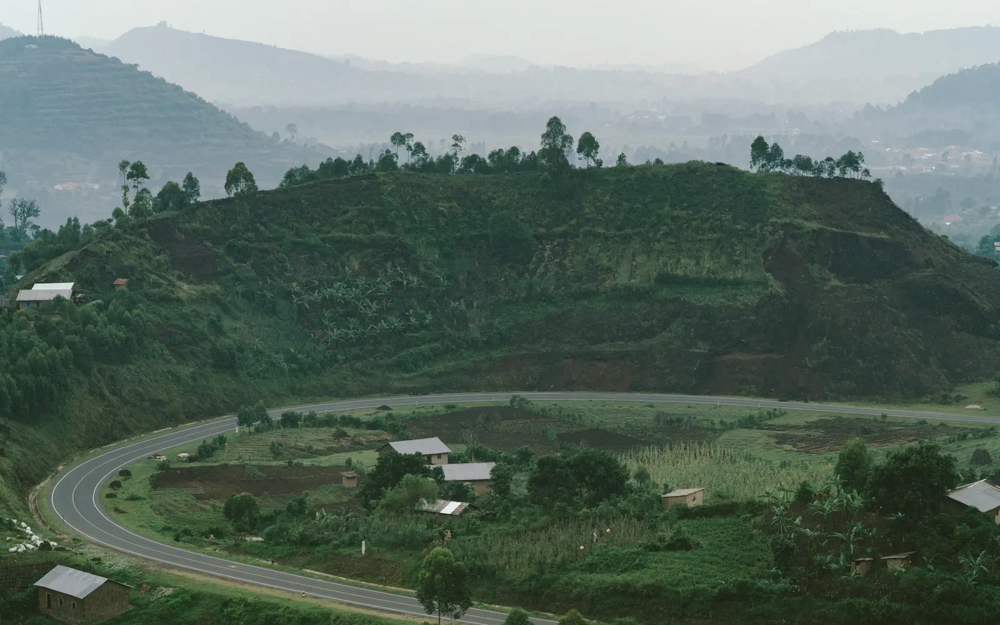

Signature Journey · Rwanda & Uganda
Across the
Virungas
Seven nights shaped around two mountain-gorilla landscapes, rare primates, conservation insight and the cultures that belong to these volcanic highlands.
Tailor This Journey- Duration
- 8 days · 7 nights
- Journey style
- Private and tailor-made
- Setting
- Kigali · Mgahinga · Volcanoes
- Best suited to
- Active travellers aged 15+
The Journey
One volcanic range.
Two distinct encounters.
The Virungas ask for more than a single trek. They reward travellers who stay long enough to understand the forest around the gorillas.
This eight-day framework begins and ends in Kigali, crosses into Uganda for Mgahinga Gorilla National Park, then returns to Rwanda for Volcanoes National Park. The shape is deliberate: two countries and two gorilla landscapes, balanced with golden monkeys, living heritage, conservation context and time to recover between demanding days on foot.

Uganda in view
Inside Uganda's Virunga foothills.
Winding roads rise through cultivated highlands towards the forest, making the changing landscape part of the Uganda chapter rather than simply a transfer between lodges.
A suggested rhythm
Eight days, carefully sequenced.
The framework follows the published Rwanda–Uganda lodge sequence. Resplendent will refine it around permit availability, border requirements, fitness, weather, flights and the level of privacy requested.
-
Day 01
Arrive in Kigali
A personal welcome and private transfer create a calm first evening in Rwanda. The overnight also protects the journey from tight same-day international connections.
-
Day 02
Cross into Uganda
Travel privately through Rwanda's northern highlands, complete the land-border formalities and continue to the foothills of Mgahinga. Published driving guidance is approximately four to five hours, subject to the crossing and road conditions.
-
Day 03
Trek the gorillas of Mgahinga
Set out early with the park team into steep, forested terrain. Tracking time varies; when the gorilla family is located, the encounter follows the conservation rules in force on the day. Return for a quiet afternoon and recovery.
-
Day 04
Golden monkeys and volcanic horizons
Track rare golden monkeys through bamboo forest, or choose a slower morning if the previous day's trek calls for rest. A gentle caldera walk or sundowner can complete the day, subject to conditions.
-
Day 05
Heritage, then back to Rwanda
Spend the morning with a respectfully hosted Batwa heritage experience before crossing back into Rwanda. Continue to the ridge above Lakes Burera and Ruhondo for a three-night stay near Volcanoes National Park.
-
Day 06
A second gorilla landscape
Trek in Volcanoes National Park, where bamboo forest climbs the slopes of the Virunga volcanoes. If timing and access allow, add a conservation-focused visit connected to the Dian Fossey Gorilla Fund.
-
Day 07
Choose depth over volume
Follow the conservation story through a guided visit, explore Rwandan culture, or undertake the demanding hike toward Dian Fossey's former research site and grave. The final choice should reflect fitness and recovery.
-
Day 08
Return to Kigali
Travel privately to Kigali, with a city experience if flight timing permits, then continue to the airport or a tailored Rwanda extension.
Journey investment
From USD 14,100
per person sharing.
Based on two guests travelling during selected periods. Final pricing reflects dates, availability and tailored inclusions.
Request a private proposalDesigned around you
What we tailor.
- Gorilla-permit strategy across Uganda and Rwanda
- Current border, visa and entry-document coordination
- Lodge sequence, room category and level of privacy
- Private road transfers or suitable air connections
- Porter support, walking pace and mobility considerations
- Golden monkey, volcano, conservation and cultural activities
- Pre- and post-journey stays in Kigali or elsewhere in East Africa
Before confirmation
Every protected detail is made explicit.
The published lodge framework references Mount Gahinga Lodge in Uganda and Virunga Lodge in Rwanda. Route details draw on official supplier information; the editorial photography is independently licensed.
Resplendent will confirm the operating partner, permits, lodge space, inclusions, rates, payment terms and cancellation conditions in your proposal. No trek, wildlife sighting, room or supplier is confirmed until the accepted proposal and required payment are in place.
From the Journal
Why this journey belongs to two countries.
Our Journal looks beyond the sighting itself—to the pace, physical preparation, conservation rules and cultural context that make a gorilla journey meaningful.
Your Gorilla Journey
Begin with the right questions.
Tell us who is travelling, the dates you are considering and the level of activity and privacy you prefer. We will shape the route and secure the next practical steps.
Tailor This JourneyGorilla tracking is limited to travellers aged 15 and over. Permits, lodge stays, border entry, services and rates remain subject to current rules, availability and supplier confirmation.